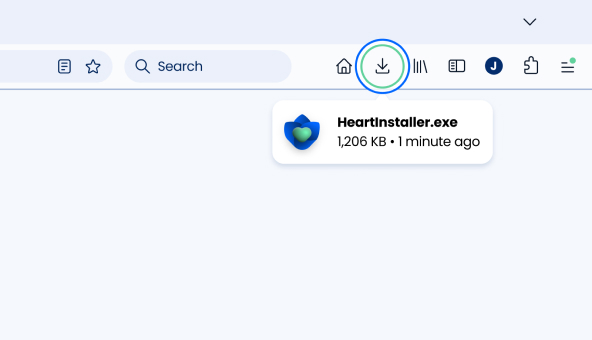

Thanks for downloading!
Just a few steps left.
If your download didn’t start automatically,
click here to try again.
Step 1
Open
Open the downloaded file by double-clicking it in your downloads folder located at the top-right corner of this window.

Step 2
Install
Follow the on-screen instructions and click “Install” to initiate the installation.
Step 3
Launch
Wait for installation to finish. Heart will open automatically when it's done and let you customize it based on your preferences.